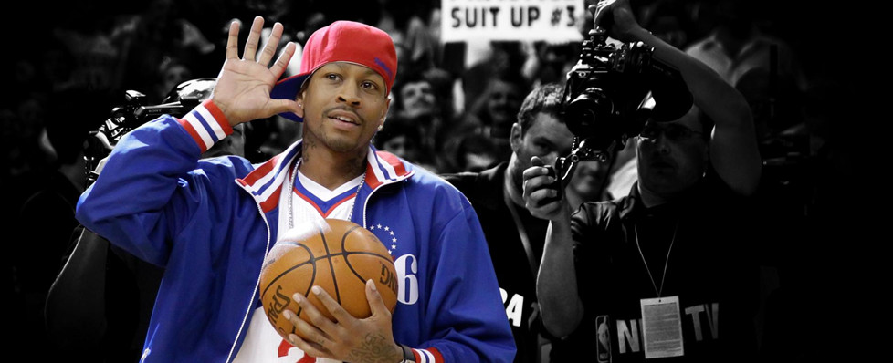
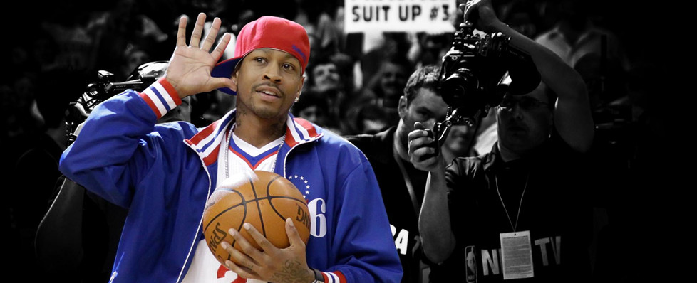

大学时期
1993 年同时获得弗吉尼亚州橄榄球和篮球的州冠军以及年度最佳球员
1994-1995 赛季获得大东部最佳新秀，大东部最佳防守队员
1995-1996 赛季蝉联大东部最佳防守队员，入选大东部最佳阵容第一队以及全美联盟最佳阵容第一队
NBA 时期
1996 年被费城 76 人在第一轮第一顺位选中，成为 NBA 选秀状元，同时也是 NBA 历史上个子最矮的状元
1996-1997 赛季获得新秀全明星 MVP 以及年度最佳新秀，同时入选 NBA 新秀最佳阵容第一队
1998-1999 赛季获得常规赛得分王，同时入选 NBA 最佳阵容第一队
1999-2000 赛季入选 NBA 最佳阵容第二队
2000-2001 赛季带领费城 76 人打入总决赛，并获得常规赛得分王以及抢断王，再次入选 NBA 最佳阵容第一队，并且同时获得全明星赛 MVP 和常规赛 MVP
2001-2002 赛季入选 NBA 最佳阵容第二队，蝉联常规赛得分王以及抢断王
2002-2003 赛季再次入选 NBA 最佳阵容第二队，连续 3 次获得常规赛抢断王
2004 年雅典奥运会担任美国梦 6 队队长，并带队获得奥运会男篮季军
2004-2005 赛季获得全明星赛 MVP 以及常规赛得分王，入选 NBA 最佳阵容第一队
艾弗森 NBA 职业生涯先后 11 次入选全明星阵容，在这项记录上，已经比肩张伯伦、摩西·马龙等球员